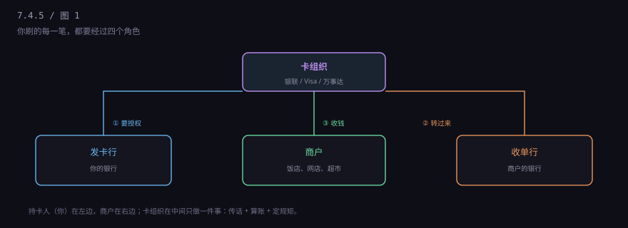
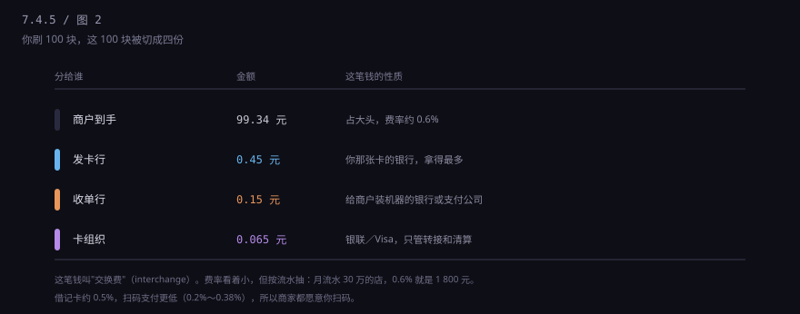

约 0.26 万字 · 3 张图 · 它不发行卡，不给你钱，但你每刷一笔它都抽一点
先把演员摆出来。一笔刷卡消费，牵扯四个机构，缺一不可。

发卡行：给你发卡的那家银行。它垫钱、它承担你赖账的风险、
它赚你的利息。
收单行：给商户装 POS 机、帮商户收钱的那家机构。
可能是银行，也可能是拉卡拉、银联商务这类支付公司。
卡组织：银联、Visa、万事达。它不发卡、不放贷，
只做三件事——转接信息、清算资金、制定规则。
商户：收钱的那一方。
为什么需要一个"只传话"的角色？因为全世界的银行有几十万家，
如果每家都要跟每家直连，需要 n × n 条线路；
有了卡组织这个中心，只需要 n 条。
它是个交换机，也是个裁判。
这里要把两个词分开：清算和结算。
清算（clearing）是算账：这一天全国几亿笔交易， 谁该给谁多少钱，轧差之后得出一个净额。 结算（settlement）是搬钱：按那个净额，真的把资金从一家银行划到另一家。
所以你在便利店刷 5 块钱，不会真的有一笔 5 块钱从你的银行飞到商户的银行。 它只是被记在账上，等到日终，跟其他几百万笔一起抵扣， 最后只搬一个总数。这套机制叫净额清算， 是整个金融系统能用这么少的钱支撑这么大交易量的原因。
商户收款是要付手续费的。这笔钱业内叫"商户扣率"， 信用卡大约 0.6%，借记卡大约 0.5%。

这 0.6 元里，0.45 元归发卡行——因为它垫了钱、担了风险， 这是最大的一块，业内叫"交换费"。0.065 元归卡组织， 叫"网络服务费"。剩下的归收单行，用来覆盖机器、运维、人工。
这个比例不是市场谈出来的，是监管定的。 2016 年发改委和央行做过一次"96 费改"，把费率统一下调并封顶： 借记卡发卡行服务费 0.35%、单笔不超过 13 元； 贷记卡 0.45%、不封顶。
所以你会发现一个现象：大额消费，商家更希望你用借记卡， 因为信用卡那 0.45% 不封顶，刷 10 万就是 450 元。
它卖的不是通道，是三样东西。
一是互认。 你的卡能在全世界几千万台机器上刷，不是因为你跟那些商户有关系， 是因为那些商户都接了 Visa 的规则，你的发卡行也接入了 Visa 的网络。 卡组织卖的是"我们都按同一套规矩来"这件事。
二是清算。 跨行、跨国的钱怎么轧差、什么时候到账、汇率怎么定， 都由它的清算系统处理。这部分是重资产，也是护城河。
三是仲裁。 你跟商户吵架，谁对谁错？拒付规则、举证责任、时限， 都是卡组织定的。它有权力判，因为它两边都管得着。
顺便说一句它的出身。Visa 最早是美国银行在 1958 年搞的一个信用卡项目， 叫 BankAmericard；因为太多银行想加入， 1970 年代被拆出来做成一个独立组织，1976 年改名叫 Visa。 万事达也是类似路径，从几家银行的联盟长起来的。
所以卡组织本质上是银行们合资办的合作社， 后来陆续上市成了公司。它不是政府机构， 没有权力强制谁接入——它靠的是"接入的人越多，网络越值钱"这个正循环。
2002 年之前，中国没有统一的银行卡网络。 工行的卡只能在工行的机器上用，去外地出差取钱，得找同行网点。 这叫"诸侯割据"。
2002 年 3 月，中国银联在上海成立，把各家银行的网络连到一起。 从那以后，一张卡可以在任何一台贴着"银联"标志的机器上用。 这一步的意义，相当于把全国的铁路轨距统一了。
之后它一路往外走：2005 年开通境外受理，2010 年代进入上百个国家和地区。 今天的银联，是全球发卡量最大的卡组织之一—— 但它的交易大部分发生在中国境内， 在欧美本地的受理面远不如 Visa。
因为人民币的银行卡清算业务，在中国是需要牌照的。
2015 年国务院放开银行卡清算市场，2020 年连通公司（American Express 合资） 拿到第一张外资清算牌照，之后万事达的"万事网联"也获批。 但在那之前，境内人民币交易只能走银联——这是历史形成的格局， 也是为什么你手里那张印着 Visa 的卡，在国内刷的时候， 实际上还是走银联通道。
境外就不一样了。你在美国刷，走的是当地的清算网络， 由 Visa 或万事达转接，钱按当天汇率换成美元结算， 发卡行再按它的汇率跟你结人民币。这中间有两道汇率差，还有一笔货币转换费， 通常 1% 到 2%。
这里有个经典的坑，叫 DCC（动态货币转换）。 你在国外的 POS 机上刷卡，屏幕会问："用人民币结算还是当地货币？" 听起来选人民币更省心，实际上选人民币最贵。
因为选人民币，是商户那边的收单机构替你换汇， 它的汇率里藏了 3% 到 5% 的点差，你还看不到。 选当地货币，才是走卡组织的批发汇率，通常只加 1% 左右。
一句话记住：出国刷卡，永远选当地货币。 ATM 取现也是同一个道理，机器问你要不要"以人民币计费"，选否。
还有个常见困惑：为什么很多境外网站不认银联？
不是技术问题，是商业问题。商户要接一个卡组织， 得跟收单行谈、改结算流程、承担拒付风险。 如果来刷银联的客人只占 1%，他没必要为你一个人改系统。 受理面是网络效应，越多人用越好接，越好接越多人用。
这也解释了为什么银联在东南亚、港澳受理很好，在欧美差一些—— 那些地方的中国游客和商户密度不一样。
再补一个常被问到的：为什么境外网站刷卡经常不要密码？
因为那是"无卡交易"（card-not-present），卡片不在场， 没法验证芯片，只能靠卡面信息和风控模型。 欧美很多商户至今不做 3D Secure，因为多一步验证会掉转化率。 风险就转嫁给了发卡行——所以你的银行会对境外无卡交易特别敏感， 有时候一笔几百美元的单子就会打电话来问。
早些年的信用卡上，常常同时印着银联和 Visa 两个标志，叫"双标卡"。 境内走银联，境外走 Visa，一张卡两个圈子通吃。
2016 年前后，这种卡停止新发。原因是清算规则： 一笔交易只能由一个清算机构处理， 双标卡在技术上让两个网络"谁都能碰"，不符合监管要求。
替代方案是"套卡"：一次申请给你两张卡，一张银联、一张 Visa， 共用同一个额度。境内刷银联那张，出境刷 Visa 那张。
所以你以后看到有人钱包里两张卡号完全不同的卡， 很可能就是同一笔额度拆出来的两把钥匙。